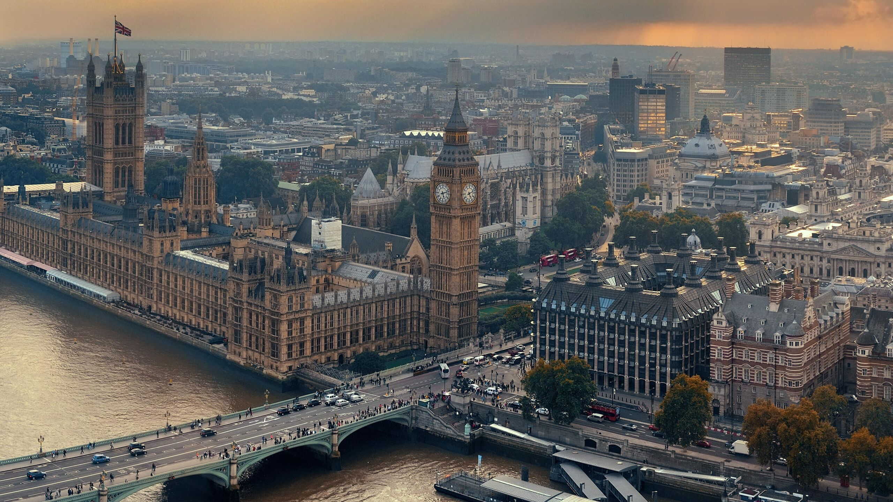
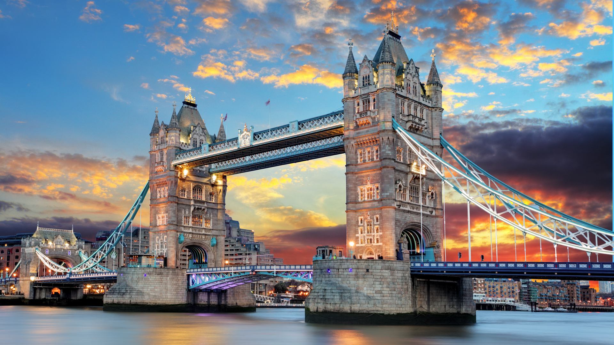

История города
История Лондона — крупнейшего города и столицы Великобритании — насчитывает,по крайней мере, 1970 лет. Согласно легенде, Лондон был основан Брутом Троянским и назван Troia Nova (с латыни Новая Троя). Однако это предание не подтверждается археологическими раскопками, и считается, что Лондон основали римляне в 43 году н. э.
Изначально это было небольшое поселение площадью около 0,8 км2. К 100 году Лондон стал столицей Британии и во II веке достиг своего расцвета. После ухода римлян Лондон был заброшен и пришёл в упадок. В VI веке вокруг стали селиться саксы и к концу IX века старый центр Лондона начал восстанавливаться. В последующие века, при изменяющихся правителях Лондон был центром территории, которая трансформировалась в Великобри- танию.
Лондон сильно вырос за время XIX века. Во время Второй мировой войны город подвергся серьёзным разрушениям, после неё многие исторические районы были заменены новыми. В настоящее время Лондон является одним из экономических и юридических центров мира, на его территории находятся штаб-квартиры ведущих международных фирм.